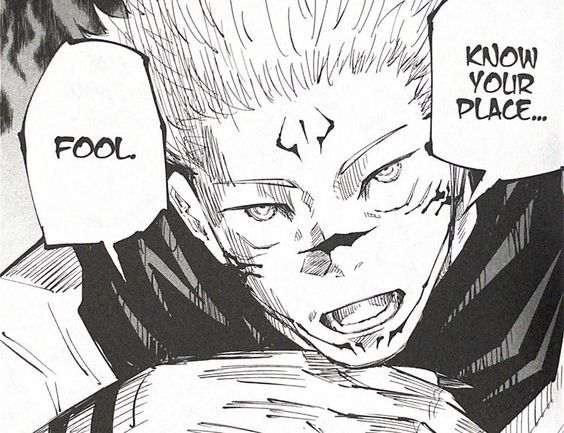

How Sukuna Defeated Gojo
In the real world, Sukuna explains to the watchers what just happened. In JJK chapter 236, Sukuna finally revealed his grand strategy. The reason why he brought out Mahoraga in the first place was to figure out a way to bypass Gojo's Infinity. Naturally, Mahoraga was able to adapt to Infinity in time. From there onwards, he changed the nature of its Cursed Energy and then was able to hit Gojo normally. This was not possible for Sukuna to pull off. As such, he looked for an alternative way from Mahoraga to counter the power of Infinity that coated Gojo. When Mahoraga sent out a slash that chopped off Gojo's arm, that is precisely what Sukuna had wanted.
From this, he realized that in order to bypass the Infinity, he simply had to change his target from Gojo to the entire world itself, including space. This meant whatever stood in between Gojo and Sukuna also got chopped when he targeted the whole world. While this makes sense on paper, it is quite confusing as, at the end of the day, there is still infinity between Gojo and Sukuna and Infinity cannot be cut as there is no end to it. The whole idea of cutting up the whole world might make sense on paper, however, practically, it doesn't seem like this technique would actually be able to bypass Infinity. Why the author went this way has confused quite a lot of the fans.
Jujutsu Kaisen's unconventional approach to its latest training arc proves exactly what sets it apart from other shōnen series and reveals the hidden genius of Gege Akutami's writing. Training arcs are an inescapable component of shōnen anime and manga as they play a crucial role in making a character's growth seem believable. However, training arcs can often be boring as they are inherently a means to an end. That said, Jujutsu Kaisen's latest chapter proves it is possible to pull off a training arc while staying true to the series and still keeping things exciting.